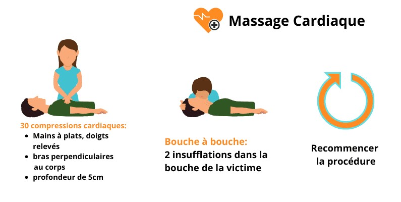
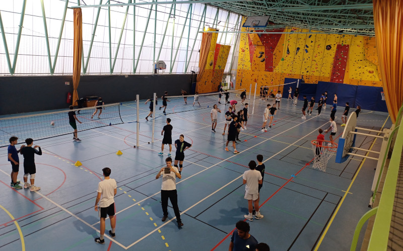
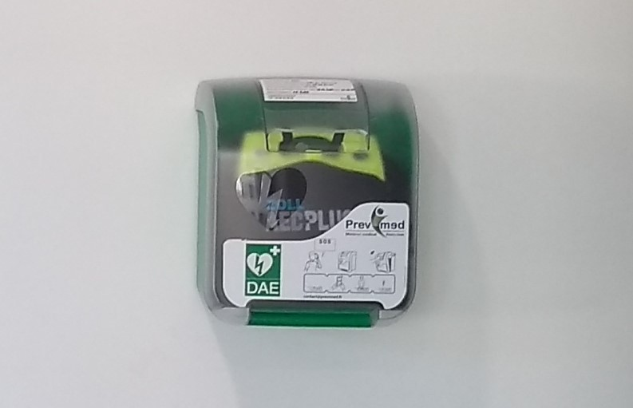
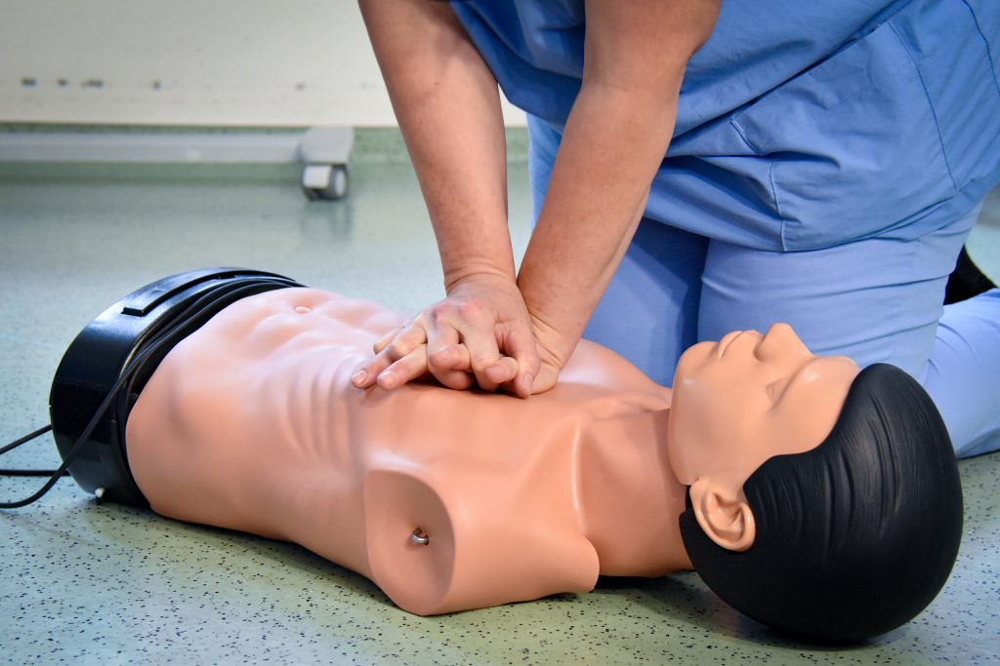
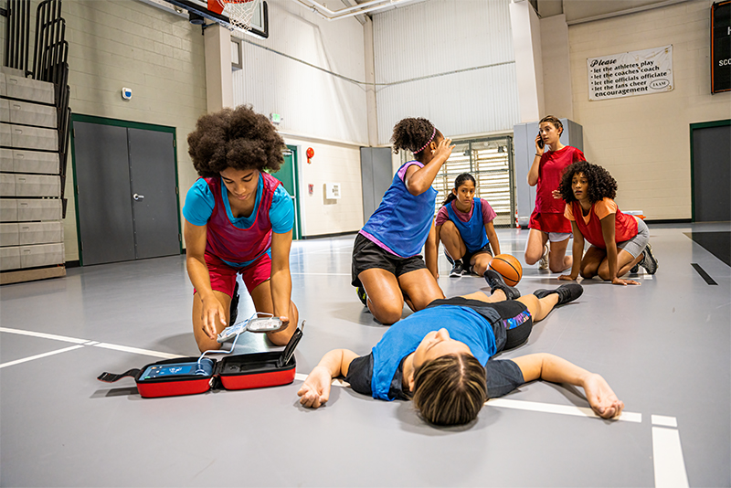
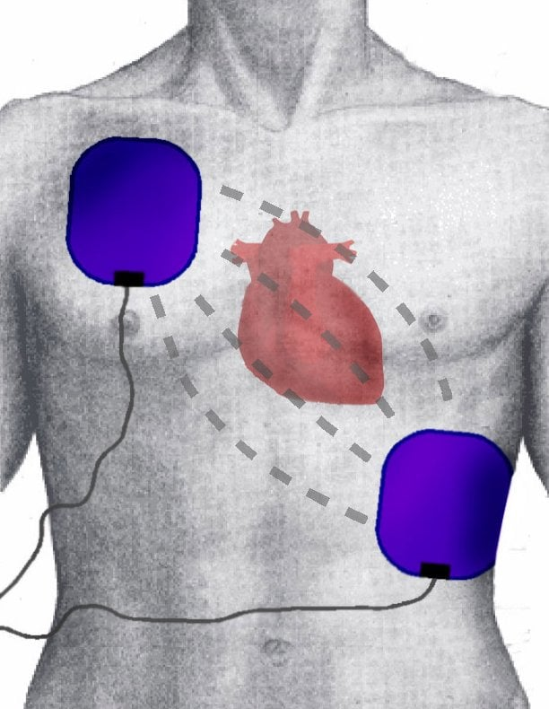

Des mouvements respiratoires bruyants, lents et inefficaces (gasps) peuvent tromper le sauveteur. Ils doivent être considérés comme un arrêt cardiaque → débuter la RCP immédiatement.
15 · 18 · 112
Demander un DAE
30 compressions
+ 2 insufflations
Le plus tôt possible
Suivre les consignes
SMUR · Pompiers
Relais de la RCP
Continuer sans s'arrêter jusqu'à l'arrivée des secours, jusqu'à ce que la victime respire normalement, ou jusqu'à épuisement complet. Chaque interruption coûte des chances de survie.
C'est possible mais sans danger pour la victime en arrêt cardiaque. Ne pas s'arrêter — les côtes cassées se soignent, l'arrêt cardiaque non traité est mortel.
Si 2 sauveteurs : l'un continue la RCP pendant que l'autre installe le DAE. Interrompre les compressions seulement quand le DAE le demande pour l'analyse.

Points clés : la RCP a-t-elle été démarrée immédiatement après la confirmation de l'absence de respiration ? L'alerte a-t-elle été donnée avec le haut-parleur pour ne pas interrompre la RCP ? Les compressions ont-elles été suffisamment profondes (5-6 cm) et au bon rythme ?





Points clés : les rôles ont-ils été répartis clairement ? La RCP a-t-elle démarré avant l'arrivée du DAE ? Le DAE a-t-il été installé pendant la RCP ? Les interruptions ont-elles été minimales ?
Rappel final : la défibrillation doit être le plus précoce possible · interrompre le moins possible la pratique des compressions thoraciques.